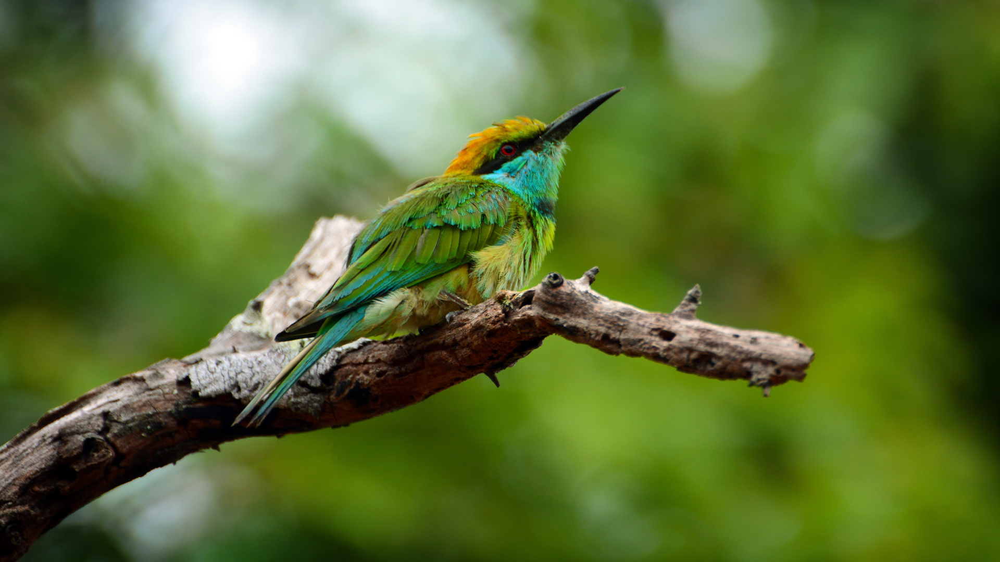

Sri Lanka, a tropical island in the Indian Ocean, boasts a rich and
diverse array of wildlife within its compact landmass. Renowned for its
biodiversity, the country is home to a variety of ecosystems, including
dense rainforests, coastal areas, and highland regions. Among its
notable wildlife are the Asian elephant, Sri Lankan leopard, and a
myriad of endemic bird species, such as the colorful Sri Lanka
Junglefowl. The island's national parks, such as Yala and Wilpattu,
offer opportunities for wildlife enthusiasts to witness the incredible
biodiversity, including diverse species of mammals, reptiles, and
amphibians. With a combination of unique flora and fauna, Sri Lanka
stands as a captivating destination for those seeking a glimpse into the
vibrant and intricate tapestry of its natural heritage. Conservation
efforts are underway to protect these valuable ecosystems and their
inhabitants, ensuring the sustainable coexistence of humans and wildlife
on this enchanting island.
Whats unique about Sri lanka's wildlife
Sri Lankan wildlife is distinguished by its remarkable biodiversity and
high level of endemism. The island is home to unique species, such as
the Sri Lankan elephant, the world's largest population of which roams
freely in national parks like Udawalawe. The elusive Sri Lankan leopard,
a subspecies found only on the island, adds to the allure of its
wildlife. Sri Lanka's avian diversity is exceptional, featuring endemic
species like the Sri Lanka junglefowl and the vibrant Sri Lanka hanging
parrot. Rich marine life, including diverse coral reefs and frequent
whale and dolphin sightings, contributes to the uniqueness of Sri
Lanka's ecosystems. Conservation efforts strive to preserve these
treasures, making the island a captivating destination for nature
enthusiasts and wildlife lovers alike.
Sri Lankan wildlife is unique and diverse, with several species that are
endemic to the island. Here are some aspects that make Sri Lankan
wildlife special:
Endemic Species: Sri Lanka has a high level of endemism, meaning many
species are found nowhere else in the world. This includes the Sri
Lankan elephant, the Sri Lankan leopard, and various species of birds,
reptiles, and amphibians.
Sri Lankan Elephant: The Sri Lankan elephant (Elephas maximus maximus)
is the largest of the Asian elephants and is considered an iconic
symbol of the country. Sri Lanka has one of the highest densities of
wild elephants in Asia.
Sri Lankan Leopard: The Sri Lankan leopard (Panthera pardus kotiya) is
a subspecies of leopard found only in Sri Lanka. Known for its
distinctive appearance and behavior, the Sri Lankan leopard is a
flagship species for conservation efforts in the country.
Unique Amphibians and Reptiles: Sri Lanka is home to a variety of
unique amphibians and reptiles, including several endemic species. The
island has a high diversity of frogs, lizards, and snakes, some of
which are found nowhere else on Earth.

Marine Life in Sri Lanka
Sri Lanka's marine life is a vibrant and diverse ecosystem that thrives
in the warm coastal waters of the Indian Ocean surrounding the island.
The coastal areas of Sri Lanka are home to an impressive array of marine
species, including colorful coral reefs, diverse fish populations, and
various marine mammals. These waters attract snorkelers and scuba divers
from around the world who seek to explore the rich underwater
landscapes. The island's marine biodiversity extends to its sea turtles,
with several species, including the endangered loggerhead and
leatherback turtles, using Sri Lankan beaches for nesting. Conservation
efforts in the country focus on preserving these crucial habitats and
protecting the unique marine life that contributes to Sri Lanka's
ecological richness.
Sri Lanka's marine life encompasses a wide range of habitats, from coral
reefs to mangrove ecosystems, providing a haven for diverse species. The
coral reefs along the coast are not only visually stunning but also host
an abundance of marine biodiversity, including numerous species of reef
fish, crustaceans, and invertebrates. The Pigeon Island National Park,
located off the northeastern coast, is renowned for its coral formations
and is a popular destination for snorkeling and diving enthusiasts.
Terrestrial Life in Sri Lanka
Sri Lanka's terrestrial life is characterized by a rich and diverse
array of flora and fauna, making the island a biodiversity hotspot. The
country's lush rainforests, expansive plains, and mountainous regions
host a variety of plant species, many of which are endemic to the
island. The Sinharaja Forest Reserve, a UNESCO World Heritage Site,
stands as a testament to Sri Lanka's unique terrestrial biodiversity.
This tropical rainforest is home to an astonishing diversity of plant
life, including rare orchids, ferns, and towering hardwood trees. The
forests also harbor an impressive array of wildlife, from the elusive
Sri Lankan leopard to vibrant bird species such as the Sri Lanka
junglefowl and the endemic green-billed coucal.
In addition to its rainforests, Sri Lanka's terrestrial ecosystems
encompass a range of habitats, including the central highlands with
scenic tea plantations and the dry plains of national parks like Yala.
These varied landscapes contribute to the country's status as a haven
for wildlife enthusiasts. Conservation efforts play a vital role in
preserving Sri Lanka's terrestrial life, ensuring the continued
existence of endemic species and maintaining the ecological balance of
its diverse ecosystems.
Here are some specific examples of terrestrial life in Sri Lanka:
Sloth Bear : Recognizable by its shaggy coat, the sloth bear is native
to Sri Lanka and is often spotted in national parks, including
Wilpattu.
Sri Lankan Leopard : The elusive leopard, a subspecies endemic to Sri
Lanka, is a flagship species for wildlife conservation. It is often
spotted in protected areas such as Yala National Park.
Sri Lanka Junglefowl : As the national bird of Sri Lanka, the
junglefowl is a colorful and distinctive species found in forested
areas throughout the island.